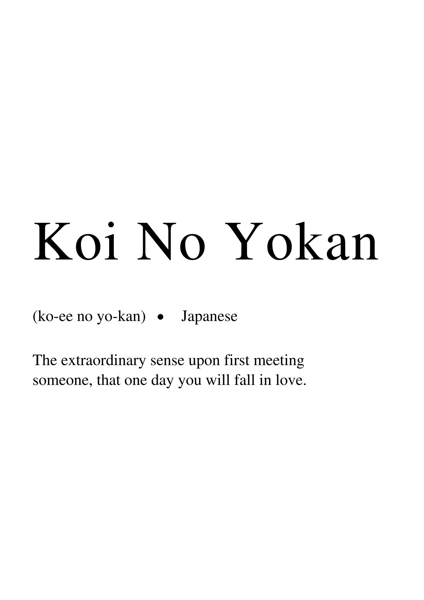

Hi Julia, this page is dedicated to
reassuring you during those times that you
can't reassure yourself. I love you so much
and this page will remind you of the saying Koi
No Yokan, my favorite Japanese phrase. Re-read all
of the cards that I've written you, or text/call me whenever
you need some reassurance and I'll always drop everything
and answer. :D